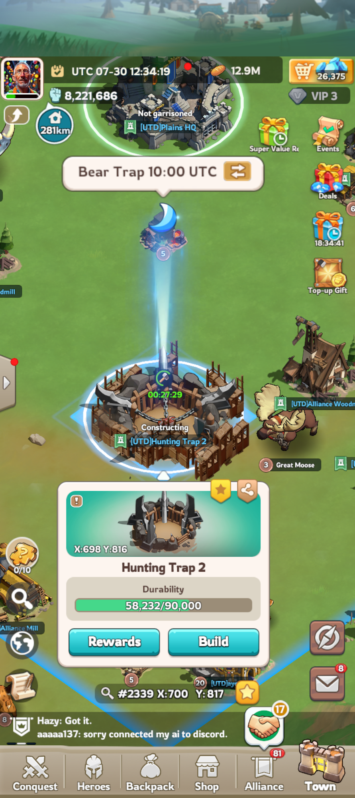
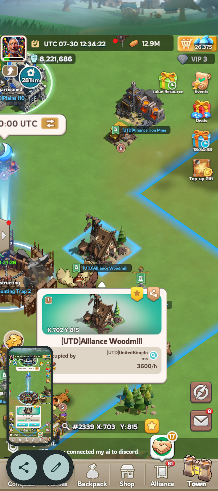
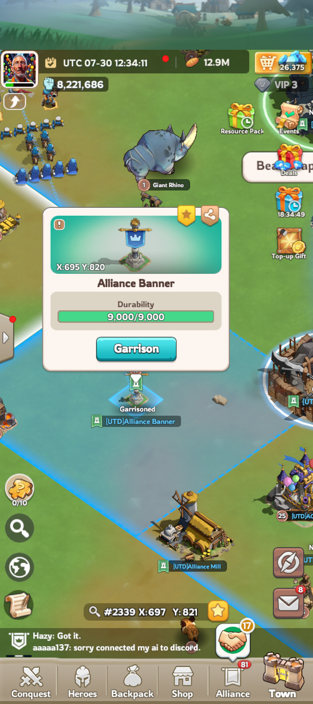
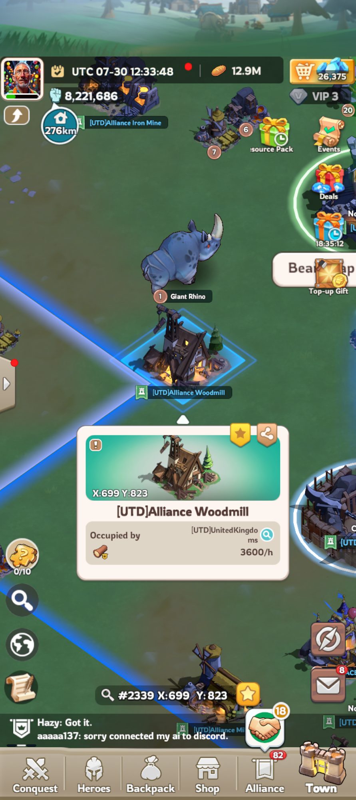

A) Screen-relative schematic (from photos only)
Drawn from what appears in batch2 shots — not from the solver tile packer.
- Is Woodmill correctly on the trap’s right (as in photo A/B)?
- Is Banner on the trap’s lower-left side (photo C)?
- City = 2×2 (same zoom everywhere — primary ruler). Mills + Banner = 1×1. HQ footprint TBD.
Photo A — Trap 2 selected (b2-03)
Popup: Trap 698,816. I marked HQ (above), Woodmill (right), Mill (lower-left).

HQ?
Trap 2 698,816
Woodmill?
Mill?
Photo B — Woodmill selected (b2-04)
Popup: Woodmill 702,815. Trap should be on the left edge; Iron Mine upper-right.

Trap 2?
Woodmill 702,815
Iron Mine?
Photo C — Banner selected (b2-02)
Popup: Banner 695,820. Mill inside territory toward bottom-right of the blue diamond.

Banner 695,820
Mill?
Photo D — Woodmill / Iron cluster (b2-01)
Popup on this shot was Woodmill 699,823 (may be a second mill or same cluster — please confirm).

Woodmill 699,823?
Iron?
Banner/flag?
What I need from you
- Which markers are in the wrong place? (e.g. “Photo A: Mill marker is actually Banner”)
- Is there one woodmill or two (
702,815vs699,823)? - For the blue diamond under Woodmill/Banner: closer to 2×2, 3×3, or 4×4 tiles?